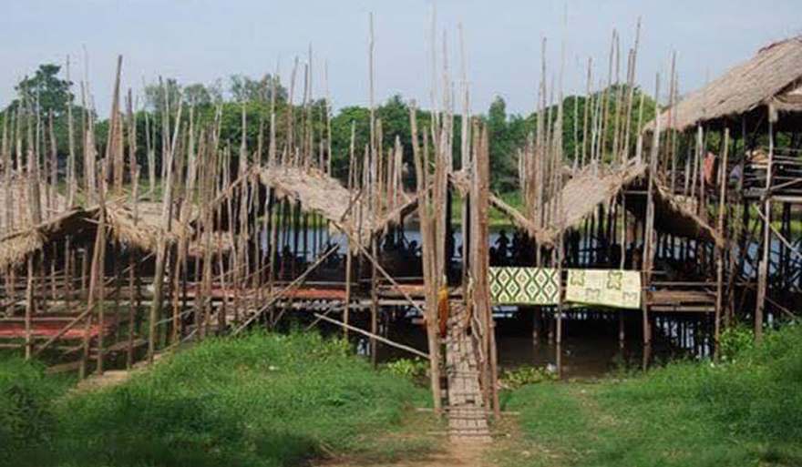
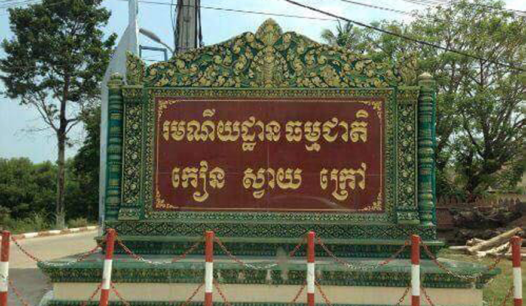
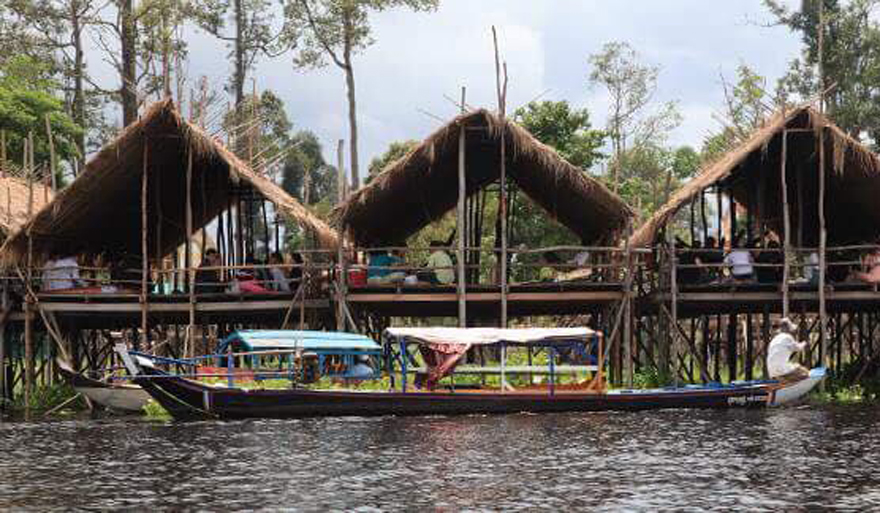
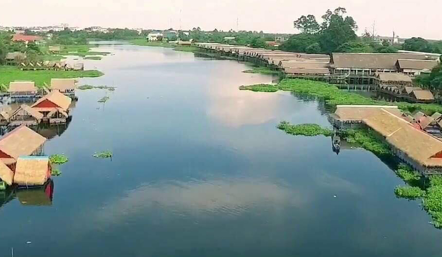

សូមស្វាគមន៍មកកាន់តំបន់ទេសចរណ៍កម្ពុជា
ខេត្តកណ្តាល ៖ រមណីយដ្ឋានវត្តកៀនស្វាយក្រៅ ដែលជារមណីយដ្ឋានចំណាស់មួយក្នុងចំណោមរមណីយដ្ឋាន ផ្សេងៗទៀត ស្ថិតនៅកៀកនឹងរាជធានីភ្នំពេញធ្លាប់ទទួលរងការរិះគន់ពីភ្ញៀវទេសចរ«រឿងកាប់ឆៅ គឺគិតថ្លៃម្ហូបកប់ពពក» នោះ បច្ចុប្បន្នបានប្រែប្រួលកិត្តិនាមគួរឱ្យកត់សម្គាល់ ។ លោកជួប សោភ័ណ ប្រធានមន្ទីរទេសចរណ៍ខេត្តកណ្តាលកាលពីពេល ថ្មីៗកន្លងមកឱ្យដឹងថាពេលនេះរមណីយដ្ឋានវត្តកៀនស្វាយក្រៅ ប្រែប្រួលជាងមុនទាំងការរៀបចំសណ្តាប់ធ្នាប់ បរិស្ថាន អនាម័យ រួមទាំងសេវាកម្ម ផ្សេងៗទៀត ជាពិសេសគឺតម្លៃម្ហូប និងថ្លៃតូបជួល ។
លោកប្រធានមន្ទីរទេសចរណ៍ខេត្តកណ្តាលបន្តថា៖ «បញ្ហាសំខាន់ដែលធ្វើឲ្យភ្ញៀវទេសចរណ៍រិះគន់យ៉ាងចាស់ដៃកាលពីពេលមុននោះ គឺតម្លៃម្ហូបអាហារថ្លៃហួសហេតុមិនអាចទទួលយកបាននោះ លែងជាបញ្ហាចោទតទៀតហើយ ។ មន្ត្រីជំនាញរបស់មន្ទីរតែងតែទៅណែនាំ អប់រំដល់ក្រុមអាជីវកររកស៊ី និងផ្តល់សេវាកម្មគ្រប់ផ្នែកនៅរមណីយដ្ឋានធម្មជាតិមួយនេះជាប់ជាប្រចាំ សំខាន់ឲ្យពួកគាត់យកចិត្តទុកដាក់ក្នុងការរៀបចំសណ្តាប់ធ្នាប់ បរិស្ថាន អនាម័យ ការរក្សាសន្តិ សុខសុវត្ថិភាព សម្រាប់ភ្ញៀវទេសចរណ៍ជាដើម »។ លោកជួប សោភ័ណ បន្ថែមថា៖ «ទន្ទឹមនោះយើងក៏បានលើកយកហេតុផលរួមទាំងផលប្រយោជន៍ដែលពួកគាត់នឹងទទួលបានពីភ្ញៀវទេសចរផងដែរ ។ បញ្ហាតម្លៃសេវាម្ហូបអាហារ គឺជាកត្តាសំខាន់បំផុតដែលមន្ត្រីជំនាញចុះតាមដាន និងអប់រំជាបន្តបន្ទាប់ដោយប្រាប់ពួកគាត់មិនឲ្យដំឡើងថ្លៃម្ហូបអាហារហួសហេតុ ឬខុសប្រក្រតី ឬហៅថា «កាប់ភ្ញៀវ» នោះទេ ព្រោះការធ្វើដូច្នេះមិនគ្រាន់តែធ្វើឲ្យភ្ញៀវរាងចាល ឬផលប៉ះពាល់ដល់មុខរបរពួកគាត់នោះទេ ប៉ុន្តែពួកគាត់នឹងប្រឈមផ្លូវច្បាប់ថែមទៀត» ។

លោកជួប សោភ័ណថា ខណៈនេះរមណីយដ្ឋានវត្តកៀនស្វាយក្រៅមិនមានបញ្ហាកាប់ភ្ញៀវបន្តទៀតទេ ព្រោះពួកគាត់សុទ្ធតែបានយល់អំពីកត្តាប្រឈមទាំងឡាយដែលកើតឡើង ពីភាពមិនប្រក្រតីទាំងនោះ ហើយលោករំពឹងថា ស្ថានភាពនេះនឹងបន្តជារៀងរហូត ។ ផ្តើមពីនេះភ្ញៀវទេសចរជាតិ និងអន្តរជាតិកាន់តែច្រើនឡើងបានទៅកម្សាន្តនៅរមណីយដ្ឋានវត្តកៀនស្វាយក្រៅ ។ ភ្ញៀវទេសចរណ៍ជាតិ និងអន្តរជាតិ សូមអញ្ជើញទៅកម្សាន្ត និងទទួលទានហារនៅរមណីយដ្ឋានវត្តកៀនស្វាយក្រៅឲ្យបានកាន់តែច្រើនថែមទៀត ។
លោកជួប សោភ័ណ ឲ្យដឹងថា ភ្ញៀវទេសចរជាតិ និងអន្តរជាតិដែលទៅកម្សាន្តនៅខេត្តកណ្តាលឆ្នាំ២០១៧ មានចំនួន ១.៤១៨.៦៣១នាក់ ក្នុងនោះភ្ញៀវទេសចរជាតិចំនួន១.៤០៨.០១២នាក់ បើប្រៀបធៀបឆ្នាំ២០១៦ (មានចំនួន១.២៣០.៧៣៥នាក់) គឺមានអត្រាកើនឡើង១៤,៤០% រីឯទេសចរអន្តរជាតិមានចំនួន១០,៦១៩នាក់ បើធៀបឆ្នាំ ២០១៦ (មានចំនួន៨.២៥១នាក់ ) គឺមានអត្រាកើនឡើង២៨,៦៩% ។ ភាគរយច្រើនបំផុតនៃភ្ញៀវទេសចរសរុបគឺទៅទស្សនារមណីយដ្ឋានកៀនស្វាយក្រៅ ។
លោកប្រធានមន្ទីរទេសចរណ៍បានអំពាវនាវឲ្យអាជីវករយកចិត្តទុកដាក់រៀបចំសណ្តាប់ធ្នាប់ បរិស្ថាន អនាម័យ ការរក្សាសន្តិសុខឲ្យបានល្អ សំខាន់បំផុតនោះគឺកុំលក់ដូរម្ហូបអាហារក្នុងតម្លៃមិនប្រក្រតីដែលមិនអាចទទួលយកបានធ្វើឲ្យភ្ញៀវរិះគន់ ហើយរាងចាលលែងធ្វើដំណើរទៅកាន់រមណីយដ្ឋានមួយនេះ ។ រមណីយដ្ឋានវត្តកៀនស្វាយក្រៅជារមណីយដ្ឋានចំណាស់មួយ ហើយពេញនិយមបំផុតសម្រាប់ភ្ញៀវជាតិ និងអន្តរជាតិ ។ រមណីយដ្ឋាននេះចាប់កំណើតនៅសម័យសង្គមរាស្ត្រនិយម ។ លុះដល់ទសវត្ស៧០ រមណីយដ្ឋាននេះបានក្លាយជារមណីយដ្ឋានដ៏ទាក់ទាញ និងមានភ្ញៀវទេសចរទៅសម្រាកកម្សាន្តយ៉ាងច្រើនបំផុត ខណៈពេលដែលរមណីយដ្ឋានដទៃទៀតត្រូវបិទដោយសារតែសង្គ្រាម ។
លោកស្រីសេង ហេង វ័យ៤០ឆ្នាំ និងមានទីលំនៅក្នុងខណ្ឌចំការមន រាជធានីភ្នំពេញមានប្រសាសន៍ថា ក្រុមគ្រួសាររបស់អ្នកស្រីក៏ដូចជាមិត្តភក្តិនិយមទៅលេងរមណីយដ្ឋានកៀនស្វាយក្រៅ ព្រោះមានអាកាសធាតុល្អ អាចជួលទូកជិះកម្សាន្ត ជាពិសេសការរៀបចំកន្លែងចតឡាន និងទិញម្ហូបមានលក្ខណៈងាយស្រូលជាងមុន។ អ្នកស្រីសេង ហេង និយាយថា៖ «ពីមុនកន្លែងចតឡានម៉ូតូក៏ពិបាក ហើយអ្នកលក់ជាម្ចាស់តូប ឬម្ចាស់ភោជនីយដ្ឋានគឺកាប់ឆៅតែម្តង បើសិនជាយើងមិនបានសួរនាំតម្លៃ ឬតថ្លៃជាមុន ។ តែរយៈពេលប្រមាណ៣ ឬ៤ឆ្នាំចុងក្រោយ ខ្ញុំពេញចិត្តការរៀបចំនៅកៀនស្វាយក្រៅ ព្រោះមានផ្សារសម្រាប់យើងចូលទៅទិញម្ហូបក្នុងតម្លៃសមរម្យ ហើយក៏មានបន្លែអ្នកស្រុកដែលយើងអាចទិញយកមកផ្ទះសម្រាប់ធ្វើម្ហូបបានទៀតផង។ ជាពិសេសគឺយើងអាចទិញម្ហូបបានគ្រប់មុខ ហើយជួលតូបល្មមសម្រាប់សមាជិក៥នាក់គឺតម្លៃត្រឹមតែ១ម៉ឺនរៀលតែប៉ុណ្ណោះ» ៕

© រក្សាសិទ្ធិគ្រប់យ៉ាងដោយ Visit Cambodia tours ឆ្នាំ២០១៨
អាសយដ្ឋាន
អគារលេខ ៣០៨ មហាវិថីព្រះមុន្នីវង្ស
សង្កាត់បឹងរាំង ខណ្ឌដូនពេញ
Visit Cambodia tours ជាគេហទំព័រ សម្រាប់ធ្វើការស្វែងរកកន្លែងកម្សាន្ត និង បញ្ជាក់បន្ថែមនៅពត័មានរបស់ខេត្ត។